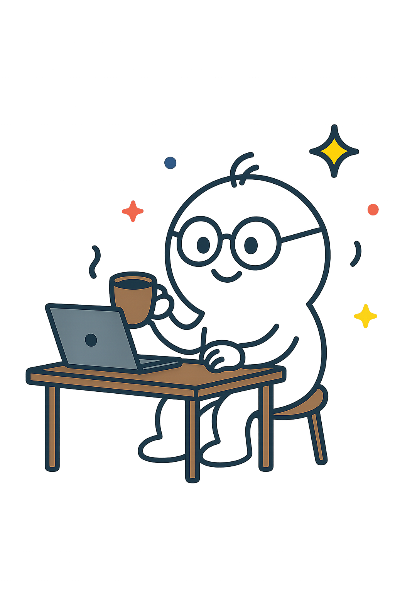

Podpoř české vědce
Objevuj a podporuj výzkum českých vědců. Pozvi je na kafe a ukaž, že jejich práce má smysl!
Najdi vědce

Objevuj a podporuj výzkum českých vědců. Pozvi je na kafe a ukaž, že jejich práce má smysl!
Najdi vědceCzechGenius je komunitní platforma, která propojuje české vědce s veřejností. Umožňuje vědcům sdílet svou práci lidsky a srozumitelně – formou krátkých příspěvků, jako na sociálních sítích. Každý návštěvník může podpořit oblíbeného vědce malou částkou – například „pozváním na kafe“. Cílem projektu je podpořit otevřenou vědu, ocenit lidské úsilí za výzkumem a vytvořit prostor, kde věda není vzdálená, ale blízká a osobní.